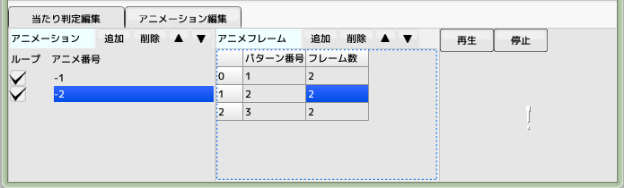
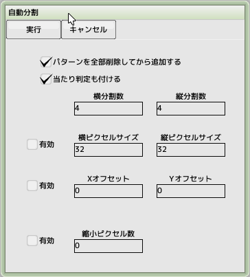

■元のページへ戻る
■元のページへ戻る
- イメージファイルを登録し、パターンリストを作成します。当たり判定やアニメーションの登録もできます。
パターン番号は1から始まっていることに注意してください
- 一つのスプライト内にイメージファイルを8枚まで登録でき、バンク切り替えボタンで0～7を切り替えます
- カラーキー
αチャンネルを持たないイメージの特定色を透明色へ変換するカラーをARGB32ビットで記述します
「...」ボタンでARGB値を入力するダイアログを開きます
カラーキーで透明色に変換した場合と、αチャンネルでの透明色は扱いが異なります
イメージファイル
- イメージファイルとして使用できるファイルの種類は.bmp .pngといった一般的なフォーマットで、αチャンネルも利用可能です
BMPとPNGファイルはインデックスカラー（パレット）は非サポート、DDSファイルは全て未サポートです
- イメージファイルの項目の「...」からイメージファイルを選択してください、登録解除は「×」ボタンです
- プレビュー内でのマウス操作は、右ドラッグでイメージ移動、ホイールで拡大縮小となっています
パターンリスト
スプライトとして表示するためにイメージ内から位置とサイズを指定して切り出します
プレビュー上で緑色の枠で表示されます
- バンク
登録したイメージのバンク番号
- X位置、Y位置
イメージからパターンを切り出す開始位置（イメージ左上を 0,0 としたピクセル位置）
- 横幅、縦幅
イメージからパターンを切り出すサイズ（ピクセル単位）
- X中心、Y中心
切り出したパターンの中心位置。回転や拡大を行う場合にこの位置を中心に計算します。また、当たり判定の基準位置もここになります
- 複数選択時の挙動
パターンを範囲選択した状態で数値を入力すると選択範囲全てのパターンが同時に書き換わります
また、その状態で当たり判定の数値を入力すると選択した全てのパターンの当たり判定が書き換わります(数値入力のみ)
- コピー＆ペースト
CTRL+Cで選択範囲をクリップボードへコピー、CTRL+Vでクリップボードからカーソル位置へペーストします
エクセル等のセル編集ソフトと多少の互換性があります
攻撃判定リスト
攻撃用の当たり判定を登録します
プレビュー上で赤色の枠で表示されます
- X位置、Y位置
パターンの中心位置からの相対位置
- 横幅、縦幅
当たり判定の大きさ
防御判定リスト
防御用（やられ）の当たり判定を登録します
プレビュー上で水色の枠で表示されます
- X位置、Y位置
パターンの中心位置からの相対位置
- 横幅、縦幅
当たり判定の大きさ
- 「当たり判定を細分化」
スプライトを回転させる時に、当たり判定が回転に追従するように分割します
大量に出現する当たり判定のあるスプライトの場合、細分化のチェックを外すと処理が軽くなります
アニメーション

複数のパターンを指定フレーム表示しながら切り替えることをアニメーションと呼びます
- アニメ番号
-1から始まるこの番号をパターン番号の代わりに指定することでアニメーションを実行できます
- ループ制御
アニメーションが終端まで到達したときにループして頭に戻るかどうかを指定します
- フレーム
アニメーションで表示するパターン番号と表示フレーム数を指定します
- プレビュー再生
アニメーションを表示します
パターン番号とアニメーション番号
- パターン番号とはパターンリストに登録された、イメージからの切り出し情報のインデックス番号です。パターンリスト表の一番左端に通し番号が振られていますが、それがパターン番号です（1から始まり、正の方向へ順に振られていきます）
- アニメーション番号とはアニメーション一覧に表示されている番号のことで(-1から順に負の方向へ振られていきます）
アニメーション番号はどこへ指定するか？
本来パターン番号を指定する箇所があります（キャラクタやスクリプト内）。そこでパターン番号の変わりにアニメーション番号を指定してください。
特殊なパターン番号「０（ゼロ）」
パターン番号が正の数の場合はパターン番号、負の数の場合はアニメーションになると説明しましたが、０の場合はどうなるのでしょうか。０を指定した場合、表示オフと同等の効果があります（当たり判定も消えます）。アニメーション内にも指定できますので点滅するようなアニメも作ることが出来ます

自動分割
一定の法則があるイメージファイルのパターンを一つずつ登録していくのは面倒だと感じた場合、自動分割でラクをすることができます
例）フォント用イメージ
- パターンを全部削除してから追加する
チェックすると、登録済みのパターンを全部削除し、まっさらな状態からパターンを追加します
- 分割数
右図の場合4x4へ分割します
- ピクセルサイズ
１パーツのサイズをピクセル単位で指定します（チェックなしの場合は等分割します）
- オフセット
左上からの開始ピクセル位置を指定します（チェックなしの場合は左上隅から計算します）
- 縮小ピクセル数
分割後のサイズを指定ピクセルだけ上下左右のサイズを縮小します
■ページ上部へ戻る